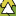
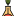
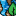

<!doctype html>
<html lang="en">
    <head>
        <meta charset="utf-8">
        <meta http-equiv="X-UA-Compatible" content="IE=edge">
        <meta name="viewport" content="initial-scale=1,user-scalable=no,maximum-scale=1,width=device-width">
        <meta name="mobile-web-app-capable" content="yes">
        <meta name="apple-mobile-web-app-capable" content="yes">
        <link rel="stylesheet" href="css/leaflet.css">
        <link rel="stylesheet" href="css/qgis2web.css"><link rel="stylesheet" href="css/fontawesome-all.min.css">
        <link rel="stylesheet" href="css/MarkerCluster.css">
        <link rel="stylesheet" href="css/MarkerCluster.Default.css">
        <link rel="stylesheet" href="css/leaflet-search.css">
        <link rel="stylesheet" href="css/leaflet-control-geocoder.Geocoder.css">
        <link rel="stylesheet" href="css/leaflet-measure.css">
        <style>
        html, body, #map {
            width: 100%;
            height: 100%;
            padding: 0;
            margin: 0;
        }
        </style>
        <title></title>
    </head>
    <body>
        <div id="map">
        </div>
        <script src="js/qgis2web_expressions.js"></script>
        <script src="js/leaflet.js"></script>
        <script src="js/leaflet.rotatedMarker.js"></script>
        <script src="js/leaflet.pattern.js"></script>
        <script src="js/leaflet-hash.js"></script>
        <script src="js/Autolinker.min.js"></script>
        <script src="js/rbush.min.js"></script>
        <script src="js/labelgun.min.js"></script>
        <script src="js/labels.js"></script>
        <script src="js/leaflet-control-geocoder.Geocoder.js"></script>
        <script src="js/leaflet-measure.js"></script>
        <script src="js/leaflet.markercluster.js"></script>
        <script src="js/leaflet-search.js"></script>
        <script src="data/1_2.js"></script>
        <script src="data/3_3.js"></script>
        <script src="data/2_4.js"></script>
        <script>
        var map = L.map('map', {
            zoomControl:true, maxZoom:28, minZoom:2
        })
        var hash = new L.Hash(map);
        map.attributionControl.setPrefix('<a href="https://github.com/tomchadwin/qgis2web" target="_blank">qgis2web</a> &middot; <a href="https://leafletjs.com" title="A JS library for interactive maps">Leaflet</a> &middot; <a href="https://qgis.org">QGIS</a>');
        var autolinker = new Autolinker({truncate: {length: 30, location: 'smart'}});
        var measureControl = new L.Control.Measure({
            position: 'topleft',
            primaryLengthUnit: 'meters',
            secondaryLengthUnit: 'kilometers',
            primaryAreaUnit: 'sqmeters',
            secondaryAreaUnit: 'hectares'
        });
        measureControl.addTo(map);
        document.getElementsByClassName('leaflet-control-measure-toggle')[0]
        .innerHTML = '';
        document.getElementsByClassName('leaflet-control-measure-toggle')[0]
        .className += ' fas fa-ruler';
        var bounds_group = new L.featureGroup([]);
        function setBounds() {
            if (bounds_group.getLayers().length) {
                map.fitBounds(bounds_group.getBounds());
            }
        }
        map.createPane('pane_GoogleSatelliteHybrid_0');
        map.getPane('pane_GoogleSatelliteHybrid_0').style.zIndex = 400;
        var layer_GoogleSatelliteHybrid_0 = L.tileLayer('http://mt1.google.com/vt/lyrs=y&x={x}&y={y}&z={z}', {
            pane: 'pane_GoogleSatelliteHybrid_0',
            opacity: 1.0,
            attribution: '',
            minZoom: 2,
            maxZoom: 28,
            minNativeZoom: 0,
            maxNativeZoom: 22
        });
        layer_GoogleSatelliteHybrid_0;
        map.createPane('pane_GoogleMaps_1');
        map.getPane('pane_GoogleMaps_1').style.zIndex = 401;
        var layer_GoogleMaps_1 = L.tileLayer('http://mt1.google.com/vt/lyrs=m&x={x}&y={y}&z={z}', {
            pane: 'pane_GoogleMaps_1',
            opacity: 1.0,
            attribution: '',
            minZoom: 2,
            maxZoom: 28,
            minNativeZoom: 0,
            maxNativeZoom: 22
        });
        layer_GoogleMaps_1;
        map.addLayer(layer_GoogleMaps_1);
        function pop_1_2(feature, layer) {
            var popupContent = '<table>\
                    <tr>\
                        <td colspan="2"><strong>Организация</strong><br />' + (feature.properties['Организация'] !== null ? autolinker.link(feature.properties['Организация'].toLocaleString()) : '') + '</td>\
                    </tr>\
                    <tr>\
                        <td colspan="2"><strong>Категория</strong><br />' + (feature.properties['Категория'] !== null ? autolinker.link(feature.properties['Категория'].toLocaleString()) : '') + '</td>\
                    </tr>\
                    <tr>\
                        <td colspan="2"><strong>Информация</strong><br />' + (feature.properties['Информация'] !== null ? autolinker.link(feature.properties['Информация'].toLocaleString()) : '') + '</td>\
                    </tr>\
                </table>';
            layer.bindPopup(popupContent, {maxHeight: 400});
        }

        function style_1_2_0() {
            return {
                pane: 'pane_1_2',
        rotationAngle: 0.0,
        rotationOrigin: 'center center',
        icon: L.icon({
            iconUrl: 'markers/ecology-svgrepo-com (2).svg',
            iconSize: [19.0, 19.0]
        }),
                interactive: true,
            }
        }
        map.createPane('pane_1_2');
        map.getPane('pane_1_2').style.zIndex = 402;
        map.getPane('pane_1_2').style['mix-blend-mode'] = 'normal';
        var layer_1_2 = new L.geoJson(json_1_2, {
            attribution: '',
            interactive: true,
            dataVar: 'json_1_2',
            layerName: 'layer_1_2',
            pane: 'pane_1_2',
            onEachFeature: pop_1_2,
            pointToLayer: function (feature, latlng) {
                var context = {
                    feature: feature,
                    variables: {}
                };
                return L.marker(latlng, style_1_2_0(feature));
            },
        });
        var cluster_1_2 = new L.MarkerClusterGroup({showCoverageOnHover: false,
            spiderfyDistanceMultiplier: 2});
        cluster_1_2.addLayer(layer_1_2);

        bounds_group.addLayer(layer_1_2);
        cluster_1_2.addTo(map);
        function pop_3_3(feature, layer) {
            var popupContent = '<table>\
                    <tr>\
                        <td colspan="2"><strong>Организация</strong><br />' + (feature.properties['Организация'] !== null ? autolinker.link(feature.properties['Организация'].toLocaleString()) : '') + '</td>\
                    </tr>\
                    <tr>\
                        <td colspan="2"><strong>Категория</strong><br />' + (feature.properties['Категория'] !== null ? autolinker.link(feature.properties['Категория'].toLocaleString()) : '') + '</td>\
                    </tr>\
                </table>';
            layer.bindPopup(popupContent, {maxHeight: 400});
        }

        function style_3_3_0() {
            return {
                pane: 'pane_3_3',
        rotationAngle: 0.0,
        rotationOrigin: 'center center',
        icon: L.icon({
            iconUrl: 'markers/ecology-flask-svgrepo-com.svg',
            iconSize: [19.0, 19.0]
        }),
                interactive: true,
            }
        }
        map.createPane('pane_3_3');
        map.getPane('pane_3_3').style.zIndex = 403;
        map.getPane('pane_3_3').style['mix-blend-mode'] = 'normal';
        var layer_3_3 = new L.geoJson(json_3_3, {
            attribution: '',
            interactive: true,
            dataVar: 'json_3_3',
            layerName: 'layer_3_3',
            pane: 'pane_3_3',
            onEachFeature: pop_3_3,
            pointToLayer: function (feature, latlng) {
                var context = {
                    feature: feature,
                    variables: {}
                };
                return L.marker(latlng, style_3_3_0(feature));
            },
        });
        var cluster_3_3 = new L.MarkerClusterGroup({showCoverageOnHover: false,
            spiderfyDistanceMultiplier: 2});
        cluster_3_3.addLayer(layer_3_3);

        bounds_group.addLayer(layer_3_3);
        cluster_3_3.addTo(map);
        function pop_2_4(feature, layer) {
            var popupContent = '<table>\
                    <tr>\
                        <td colspan="2"><strong>Организация</strong><br />' + (feature.properties['Организация'] !== null ? autolinker.link(feature.properties['Организация'].toLocaleString()) : '') + '</td>\
                    </tr>\
                    <tr>\
                        <td colspan="2"><strong>Категория</strong><br />' + (feature.properties['Категория'] !== null ? autolinker.link(feature.properties['Категория'].toLocaleString()) : '') + '</td>\
                    </tr>\
                </table>';
            layer.bindPopup(popupContent, {maxHeight: 400});
        }

        function style_2_4_0() {
            return {
                pane: 'pane_2_4',
        rotationAngle: 0.0,
        rotationOrigin: 'center center',
        icon: L.icon({
            iconUrl: 'markers/ecology-svgrepo-com (1).svg',
            iconSize: [19.0, 19.0]
        }),
                interactive: true,
            }
        }
        map.createPane('pane_2_4');
        map.getPane('pane_2_4').style.zIndex = 404;
        map.getPane('pane_2_4').style['mix-blend-mode'] = 'normal';
        var layer_2_4 = new L.geoJson(json_2_4, {
            attribution: '',
            interactive: true,
            dataVar: 'json_2_4',
            layerName: 'layer_2_4',
            pane: 'pane_2_4',
            onEachFeature: pop_2_4,
            pointToLayer: function (feature, latlng) {
                var context = {
                    feature: feature,
                    variables: {}
                };
                return L.marker(latlng, style_2_4_0(feature));
            },
        });
        var cluster_2_4 = new L.MarkerClusterGroup({showCoverageOnHover: false,
            spiderfyDistanceMultiplier: 2});
        cluster_2_4.addLayer(layer_2_4);

        bounds_group.addLayer(layer_2_4);
        cluster_2_4.addTo(map);
        var osmGeocoder = new L.Control.Geocoder({
            collapsed: true,
            position: 'topleft',
            text: 'Search',
            title: 'Testing'
        }).addTo(map);
        document.getElementsByClassName('leaflet-control-geocoder-icon')[0]
        .className += ' fa fa-search';
        document.getElementsByClassName('leaflet-control-geocoder-icon')[0]
        .title += 'Search for a place';
        var baseMaps = {};
        L.control.layers(baseMaps,{' ХИЯ - ТСБ (2)': cluster_2_4,' ХИЯ - ПНЗ (3)': cluster_3_3,' ХИЯ - ЭКО (1)': cluster_1_2,"Google Maps": layer_GoogleMaps_1,"Google Satellite Hybrid": layer_GoogleSatelliteHybrid_0,}).addTo(map);
        setBounds();
        map.addControl(new L.Control.Search({
            layer: cluster_1_2,
            initial: false,
            hideMarkerOnCollapse: true,
            propertyName: 'Организация'}));
        document.getElementsByClassName('search-button')[0].className +=
         ' fa fa-binoculars';
        </script>
    </body>
</html>
